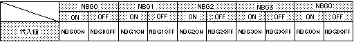

Return to previous page | Return to menu | Go to next page
void
Scroll function
Parameter-specified scroll drawing settings
void slScrDisp(mode)
Uint32 mode ;
mode Display flag corresponding to the scroll plane to be displayedFunction
Performs drawing settings for the scroll plane specified as a parameter.
Refer to the table below for the values assigned to the parameters.
When performing multiple scroll drawing settings at the same time, connect parameters with the or operator "|".
None
The drawing setting is used to set whether or not to actually perform drawing calculation processing among the scrolls registered for scrolling. Only the scroll surface with the drawing setting turned ON is actually drawn on the monitor by the drawing start declaration. Will be.
In addition, the scroll plane registered with the function “slAutoDisp” has the drawing setting ON at the time of registration.

ON: Draw the scroll screen. OFF: Does not draw the scroll screen.
Note) The values in the above table are defined in “sl_def.h” included with the system.
Reference: Chapter 8 Scroll
slScrDisp